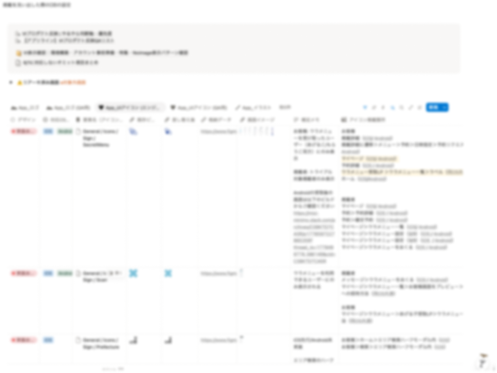

ブランドリニューアル（VI刷新）のプロダクト反映

- 期間：2025年10月〜2026年6月（実務主担当は2026年4月〜6月）
- 役割：プロダクト反映の実務主担当（デザイングループ内で横断進行を担当）
- プロダクト：美容サロン予約サービス。iOS / Android / Web の3面と、社内管理ツール
- 成果物：差し替え対象データベース、オミット判断軸、検証手順書、リリース当日の進行フロー
- 概要
- ブランドのビジュアルアイデンティティ（VI）刷新に伴い、プロダクト全体（アプリ・Web・管理ツール）のどこに旧ロゴ・旧アイコンの差し替えと情報整理、リリース当日までに運営進行を担当
- 課題
-
着手時点の課題
- どの画面・どの露出面に旧ブランド要素が使用されているか、誰にも全貌がわからない状態
- プロダクト外の露出面（ヘルプページ、オウンドメディア、コーポレートサイトの事業紹介等）は担当部署や問い合わせ窓口すら決まっていない
- 期日が決まっている一方で「やるべきこと」が増え続け、「何を今回やり、何をやらないか（スコープ）」を決める必要があった
- 取り組み
-
1. 差し替え対象の棚卸しとデータベース化
アイコン・ロゴ・イラストの「掲載箇所」「参照名」「現行デザイン」をすべてデータベースに一元化。「特定のページに載っているものはすべて対象」と定義を明確にすることで、正確な工数見積もり
2. 判断基準の整理とスコープを管理
確認事項が増えて議論が停滞しかけたタイミングで、個別の可否を上に投げるのではなく判断の枠組みごと提案
- - 対応可否を「リリース必達／リリース後に方針検討／対象外」の3分類に整理
- - 「詳細な方針を詰めるより、まず対応する／しないの判断を優先する」という進め方を明示
3. 実装との差分対応
- - アイコンの管理方法（色ごとにファイルを持つか、1コンポーネント＋コード指定か）を実装パターンから確認
- - イラストのサイズ変更前に「固定高さなどの制約はあるか」を照会してから作業
- - 配布ビルドを自分で全面確認し、UI用の色とブランド色が取り違えられている差分を検出して期待値付きで修正依頼
- - エンジニアへの連携基準（デザイン定義と大きく乖離している場合、サイズ差分が大きい場合に修正を依頼する）を明文化
4. 検証を設計し、手順書作成
表示条件が複雑で再現できない箇所については、自分が確認できればよしとせず、他の人が再現できる形に落としこみ
- - 掲載期間が終了した特集のデフォルト画像について、再現条件と必要なテスト準備と再現手順をドキュメント化
- - その知見を確認ガイドとしてドキュメント化。以降、QAはこの手順書を見て検証している
- - 表示確認が難しい箇所では「エンジニアに実装以外のタスクをお願いするのは避けたい」を原則に立て、デザイナーで対応できなければQAで補完する切り分けを提示
5. リリリース当日の進行を設計した
公開作業の手順とタイムラインを事前に整備し、当日は進行役を担当しました。ストア公開の完了後にチェックリストへチェックを入れると後続担当へ自動通知が飛ぶ運用を組み、両OSの公開完了を受けて管理ツール側の差し替えまでを当日中に完了させています。 

- 結果
-
- - 差し替え対象が一覧として存在しない状態から、データベースで管理され進捗が追える状態になった
- - 判断軸の3分類が合意され、以降の議論がその型に載るようになった
- - 検証ガイドが残り、属人的だった確認作業をQAへ引き渡せる状態になった
- - 予定どおりリリース日に両OSのストア公開を完了